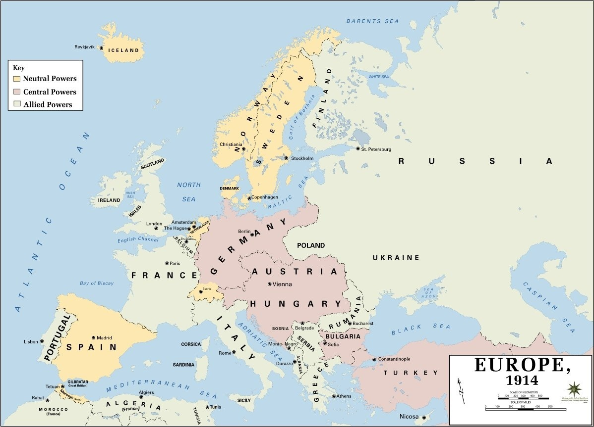
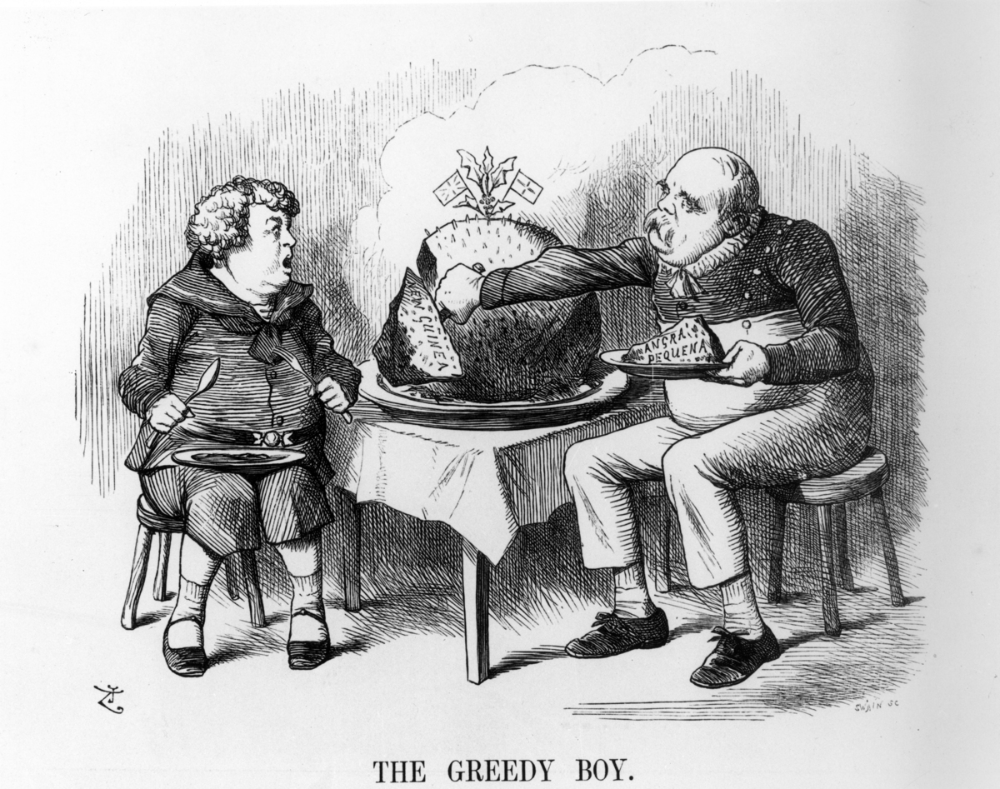
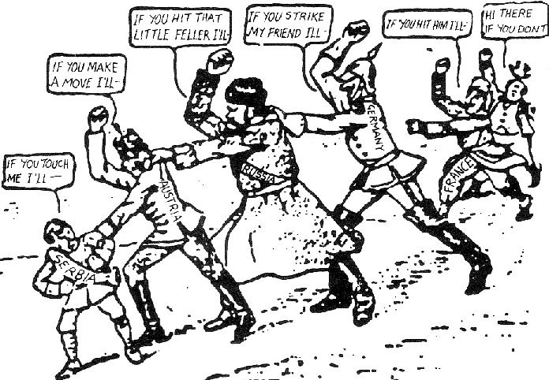
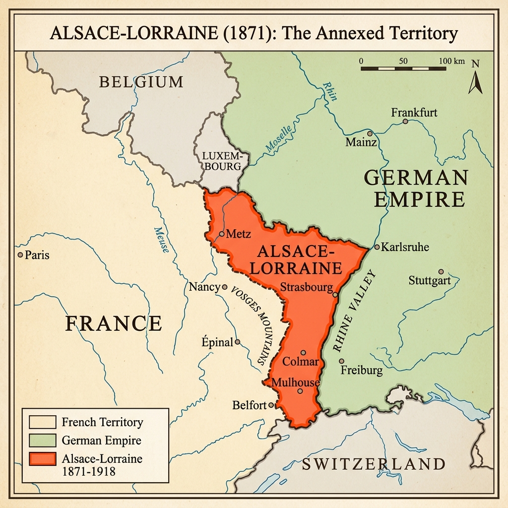
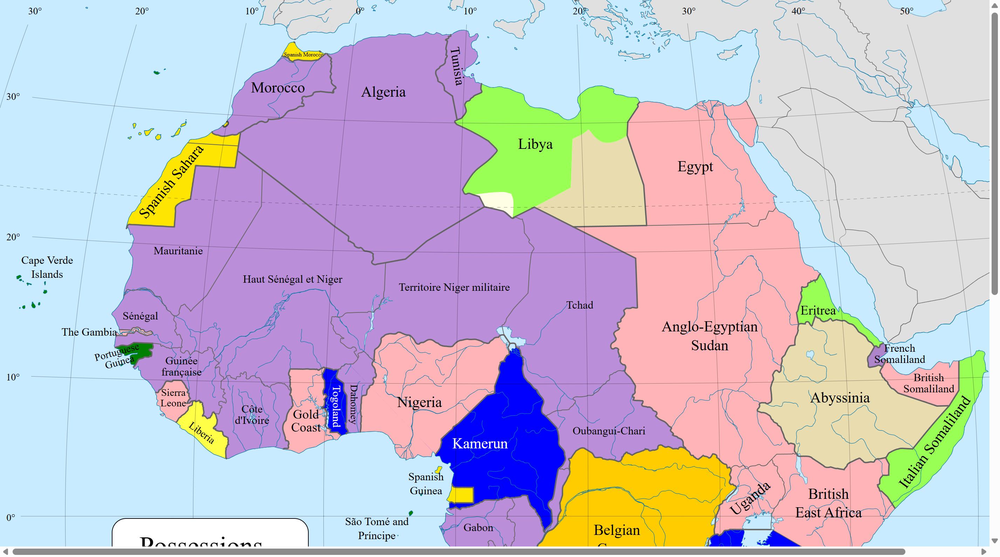
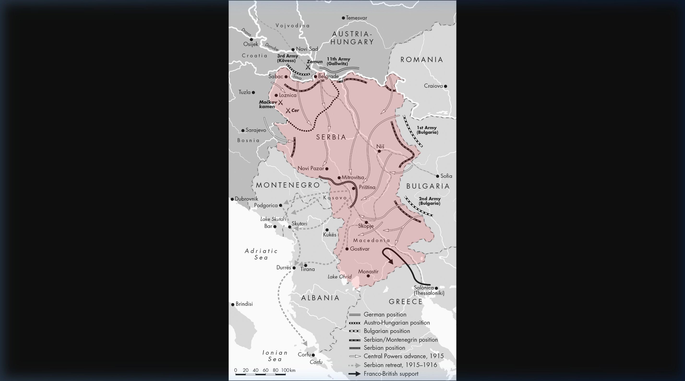
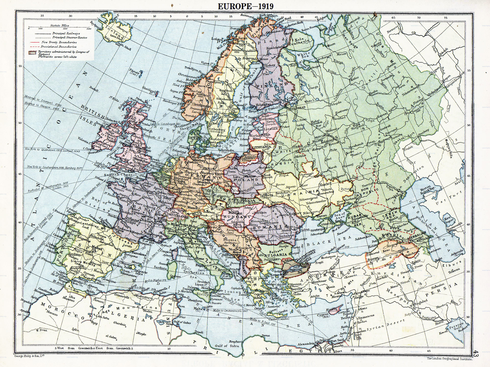

Unit Enquiry: Was the outbreak of the First World War in 1914 an inevitable disaster?
Key Stage 3 Unit
Loading quote...
Rank:Peasant0 XP
MEONCROSS SCHOOL HISTORY DEPARTMENT
Overarching Enquiry Question
"Was the outbreak of the First World War in 1914 an inevitable disaster?"
KS3 History Study Unit & Workbook: Year 9 Pack
Student Name:
Class:
Teacher:
STUDENT IDENTITY LOG & KEY
My History Pathway Target: [ ]
Student Name: [ ]
Use this log sheet to monitor your unit progress, score your daily retrieval tasks, and reference teacher feedback shorthand codes.
Unit Completion & Self-Check Log
Lesson Number & Enquiry Title
Completed? (☐)
Vocab Mastered? (☐)
Do Now Score (___ / 5)
Lesson 1: Why did the Franco-Prussian War create long-term hatred?
☐
☐
/ 5
Lesson 2: Why did the scramble for colonies turn empires into rivals?
☐
☐
/ 5
Lesson 3: Whose Navy was biggest and best: the arms race?
☐
☐
/ 5
Lesson 4: Did the European Alliance System create threat or security?
☐
☐
/ 5
Lesson 5: How did a wrong turn in Sarajevo trigger a world war?
☐
☐
/ 5
Teacher Feedback Key
Your teacher will use these shorthand markings in the margins of your book. Address them immediately in green pen.
Symbol
Shorthand Definition
Student Correction Target
Sp
Spelling Error
Look up correct spelling. Write it out 3 times in margin.
//
New Paragraph
Insert paragraph break here to separate your ideas.
!
Factual Error
Factual mistake or inaccuracy. Check your dates, names, or events.
MAP SUITE PLATE 1: The Balance of Power - Europe in 1914
Before the outbreak of war, Europe was divided into rival alliance blocs, and its geography created critical strategic advantages and vulnerabilities. Study the political borders below.

Source: USMA Department of History / Wikimedia Commons (Public Domain).
Enquiry Task: Based on the map, explain the strategic military dilemma Germany faced due to its geographical position in central Europe relative to France and Russia.
CHRONOLOGICAL BIG PICTURE: ROAD TO THE GREAT WAR
This chronological roadmap illustrates the structural, long-term rivalries leading to WWI. Study the events below.
1871
Milestone 1: 1871 The Unification of Germany (The Franco-Prussian War)

1897
Milestone 2: 1897 Imperial Rivalries (The Place in the Sun speech)
1906
Milestone 3: 1906 The Naval Arms Race (The Launch of HMS Dreadnought)
1907

Milestone 4: 1907 Encirclement & Alliances (The Triple Entente System)
June 1914
Milestone 5: June 1914 The Spark in Sarajevo (The Assassination of the Archduke)
Predict: Looking at this long-term timeline, which factor do you think was the most dangerous necessary cause of the war?
In your GCSE History exam, Question 3 will always be an "Explain why..." question worth 12 marks. To score full marks, you must provide three distinct reasons (paragraphs), each following the P.E.E.L. framework below.
POINT (P)
Start with a clear topic sentence that directly answers the question and introduces your first reason.
e.g., "One main reason why international tension increased was because of the naval arms race between Britain and Germany."
EVIDENCE (E)
Provide specific, accurate historical facts, dates, names, or statistics to support your point.
e.g., "For example, in 1906, Britain launched HMS Dreadnought, a revolutionary new battleship. In response, Kaiser Wilhelm II ordered the rapid expansion of the German navy to challenge British dominance."
EXPLAIN (E)
This is where you earn the most marks! Explain how or why your evidence led to the outcome in the question.
e.g., "This caused tension because Britain relied on the Royal Navy to protect its global empire. British politicians viewed Germany's naval buildup as a direct threat to their survival, leading to deep suspicion."
LINK (L)
Write a concluding sentence that links your explanation back to the exact wording of the question.
e.g., "Therefore, the naval arms race directly caused empires to turn into hostile rivals prior to 1914."
The 12-Mark Checklist:
Did you write exactly 3 paragraphs?
Did you use the P.E.E.L. structure in every paragraph?
Are your three reasons genuinely different from each other?
Did you use specific historical vocabulary and dates?
Lesson 1: Why did the Franco-Prussian War create long-term hatred?
1. DO NOW RETRIEVAL TASK
What does the term chronology mean when we study history?
Chronology is the arrangement of historical events in their exact order over time.
What is the practical difference between BC and AD on a historical timeline?
BC counts backward before Christ's birth; AD counts forward in the years of our Lord.
If an archaeologist uncovers an original Prussian army belt buckle from 1870, is it a primary source or a secondary source?
It is a primary source because it was created during the period of study.
What name is given to a professional historical detective who digs up and analyzes physical remains from the past?
An archaeologist.
Put these three eras in the correct chronological order, starting with the oldest: 1. Industrial Revolution 2. Roman Britain 3. Franco-Prussian War.
1. Roman Britain, 2. Industrial Revolution, 3. Franco-Prussian War.
Reference Map: Alsace-Lorraine Border Region (1871)

Core Vocabulary
Mobilise: To quickly prepare, assemble, and organize military troops and resources for active battlefield service.
Kaiser: The official German word for Emperor; used to describe the absolute head of the unified German state after 1871.
Nationalism: A powerful political ideology based on intense pride, devotion, and a sense of belonging to a single, unified national homeland.
Lesson 1: Reading & Narrative Study
2. READING & NARRATIVE STUDY
Source A: Anton von Werner, 'The Proclamation of the German Empire at Versailles', painted in 1885.
What is this source showing? This painting depicts the official birth of the unified German Empire inside the Hall of Mirrors at the Palace of Versailles in 1871. France was defeated and forced to host this ceremony in its own royal palace. This created a deep, lasting feeling of humiliation and anger in France, leading to a desire for revenge (revanche) that would eventually help spark WWI.
Visual Source Annotation Tasks
Task 1: Draw an arrow to Kaiser Wilhelm I and Chancellor Otto von Bismarck at the center of the cheering military crowd.
Task 2: Circle the surrounding architecture of the French Royal Palace, noting where this ceremony took place.
There was no country called Germany until 1871. Instead, central Europe was a fragmented collection of independent small states loosely joined only by language and local customs. The most powerful, heavily militaristic state among them was the northern kingdom of Prussia. Desiring to unite these states, Prussia's brilliant, ruthless Chancellor Otto von Bismarck first grouped the northern states into the North German Confederation. To complete his dream of a single, mighty empire, Bismarck desperately needed the independent southern German states to unite with the north. He realized that nothing would unite these separate states faster than a shared national enemy.
Bismarck's opportunity arrived in July 1870, when King Wilhelm sent him a holiday dispatch describing a friendly meeting with the French ambassador. Bismarck carefully edited and shortened the text of this message—now famously known as the Ems Telegram—before releasing it to the international press. The edited text read as though the Prussian King had explicitly insulted the French government. Horrified at this public blow to their national pride, France predictably declared war on 19 July 1870. Bismarck’s trap worked flawlessly: the independent southern German states immediately united behind Prussia.
Prussia's military strategy relied on two distinct advantages. First, they utilized an advanced railway network to mobilise and deploy 500,000 highly trained troops with astonishing speed. Second, they equipped their forces with Krupp steel artillery, which fired much faster and further than French guns. The smaller French force of 180,000 was completely caught off guard. During the catastrophic Siege of Metz, the best French troops were entirely surrounded. When the remaining French forces attempted to break the lines at the Battle of Sedan on 1 September, they suffered 17,000 casualties and over 21,000 soldiers were captured—including the French Emperor Napoleon III. Following a brutal four-month winter siege of Paris, the capital surrendered on 28 January 1871.
The war permanently transformed the balance of power. In a final, agonizing humiliation for France, the German Empire was officially proclaimed inside the Hall of Mirrors at the Palace of Versailles—the historic home of French royalty. The peace treaty forced three severe penalties upon France: it ceded the strategic industrial border provinces of Alsace-Lorraine, was forced to pay a crushing war fine of 5 billion francs over five years, and was forced to host a German occupation army. This deep humiliation shattered French national pride and planted a bitter seed of resentment. Fearing eventual French revenge, German Field Marshal Alfred von Schlieffen began drawing up a military master plan in 1897 to quickly knock out France first if Germany ever faced a simultaneous war with Russia.
Key Takeaways:
No Germany in 1870: Germany did not exist as a single country before 1871; it was a group of separate states.
Bismarck's Trap: Otto von Bismarck, the Chancellor of Prussia, edited a holiday telegram to insult France, tricking France into declaring war.
German Victory: The German states united to defeat France in 1870-1871.
Versailles Proclamation: Germany officially became a united Empire inside France's historic Palace of Versailles.
French Resentment: France lost the border lands of Alsace-Lorraine and was forced to pay a massive fine, causing long-term hatred.
Lesson 1: Comprehension Worksheet
3. COMPREHENSION WORKSHEET
Q1: Describe the diplomatic trick Chancellor Otto von Bismarck used to manufacture a war with France in 1870.
Sentence Starter: Bismarck manufactured the war by altering the Ems Telegram to make it look like...
Model Answer: Bismarck altered the Ems Telegram to make it appear that the French ambassador and the Prussian King had insulted each other, which outraged the public in both countries and provoked France into declaring war.
Q2: Identify two distinct military advantages that allowed the Prussian-led German army to quickly defeat the conventional French forces.
Sentence Starter: Two military advantages were the use of... and...
Model Answer: The German army utilized advanced steel breech-loading Krupp artillery, which fired faster and further than French guns, and utilized an extensive railway network to mobilize and deploy troops faster.
Q3: List the three severe penalties forced upon France by the victorious German Empire in the 1871 peace treaty.
Sentence Starter: The three penalties forced upon France were...
Model Answer: France was forced to pay a massive 5 billion franc indemnity, cede the strategic border territory of Alsace-Lorraine, and allow German troops to hold a victory parade through Paris.
Q4: Explain why the loss of Alsace-Lorraine and the ceremony at Versailles created a long-term "nightmare" for European peace.
Sentence Starter: The loss of Alsace-Lorraine created a nightmare because...
Model Answer: The loss of Alsace-Lorraine left France humiliated and desperate for revenge (revanche), while holding the unification ceremony in the Hall of Mirrors at Versailles deeply insulted French national pride, making long-term peace impossible.
Q5: To what extent did the maps of central Europe fundamentally change between 1862 and 1871? Use the term "North German Confederation" in your answer.
Sentence Starter: The maps of central Europe changed significantly because...
Model Answer: Central Europe changed from a loose collection of independent states into a single unified German Empire. Bismarck first grouped the northern states into the North German Confederation in 1867, and then unified them with the southern states in 1871.
Lesson 1: Independent Consolidation
4. INDEPENDENT CONSOLIDATION & ANALYTICAL WRITING
Consolidation Writing Prompt
"Why did the Franco-Prussian War create long-term hatred? Use details about Napoleon III's defeat and Alsace-Lorraine in your analysis."
Sentence Starter: The Franco-Prussian War created long-term hatred because...
Model Answer: The war created deep hatred because France suffered a crushing military defeat, including the capture of Emperor Napoleon III. This humiliation was cemented by the annexation of Alsace-Lorraine and the proclamation of the German Empire at Versailles, which fueled French desires for revenge.
Lesson 2: Why did the scramble for colonies turn empires into rivals?
1. DO NOW RETRIEVAL TASK
Name the victorious central European nation that was unified as an Empire in 1871.
Germany (or the German Empire).
Which strategic, industrial border territory did France lose to Germany in the 1871 peace treaty?
Alsace-Lorraine.
What is the definition of nationalism?
A strong identification with one's nation, often claiming its superiority over others.
Why does an original diary written by a Prussian frontline soldier in 1870 count as a primary source?
It is an original, first-hand account written during the conflict.
Define the historical term balance of power.
An international system where alliances prevent any single nation from dominating others.
Map A: Partition of Africa (1914)

Map B: The Global Imperial Lanes
Core Vocabulary
Colony: An area of land permanently settled by, and placed under the direct political and military control of, a foreign nation.
Merchant Ships: Commercial vessels built to transport raw trading goods, materials, and civilian commodities rather than serving as warships.
Great Powers: Nations that possess massive international political influence, immense industrial wealth, and dominant military strength.
Lesson 2: Reading & Narrative Study
2. READING & NARRATIVE STUDY
Source A: John Tenniel, 'The Greedy Boy', a British political cartoon published in Punch Magazine, 1885.
What is this source showing? This British cartoon satirizes Germany's Chancellor Otto von Bismarck as a "greedy boy" grabbing slices of a pudding that represents colonial territories in Africa and New Guinea. This reflects British anxiety and suspicion about Germany's aggressive efforts to build a global empire, which threatened Britain's status as the world's leading power.
Visual Source Annotation Tasks
Task 1: Draw an arrow to the globe and label what the different slices represent to European leaders.
Task 2: Circle the facial expression of the Kaiser, annotating what this reveals about British fears of German intentions.
By the turn of the 20th century, the Great Powers of Europe were locked in a fierce, competitive race to conquer and maintain overseas empires. Colonies had become vital status symbols of industrial wealth and global importance. Each territory provided cheap raw materials to feed the factories of the ruling nation, while simultaneously serving as locked-down markets to purchase the home country's manufactured goods. This race had been formalized at the , where European leaders partitioned Africa among themselves without consulting any Africans. Among the territories partitioned, the stood out as a site of extreme exploitation, owned personally by King Leopold II of Belgium.
Great Britain possessed the vastest overseas empire in human history. Because Great Britain was an island nation, its entire imperial network relied heavily on open sea routes. Thousands of British merchant ships sailed the oceans daily, and the Royal Navy was given absolute priority to keep these global sea lanes clear of foreign rivals. Crucially, Britain controlled the in Egypt to secure its vital shipping lanes to India. Any challenge to this naval dominance was viewed by British politicians as a direct threat to the survival of the British Empire. France held the second-largest empire, focusing heavily on territories in North and West Africa. Having suffered the bitter humiliation of losing Alsace-Lorraine to Germany in 1871, French politicians fiercely guarded their colonies to protect their remaining international reputation. However, imperial expansion was fraught with danger; in 1898, Britain and France nearly went to war during the , a tense military standoff over control of the Upper Nile in Sudan.
The entire geopolitical landscape destabilized when Germany entered the race. Having only unified in 1871, Germany was a new nation right in the middle of Europe, but its industry was growing rapidly. The ambitious German Kaiser Wilhelm II and his politicians wanted Germany to match the global influence of Britain and France. In a fiery speech to the German parliament on 6 December 1897, Foreign Secretary Bernhard von Bülow announced that Germany would no longer stand aside, famously demanding Germany’s own "place in the sun".
Germany rapidly seized territories across the globe, including the Cameroons, East Africa, Togo, and the Pacific colony of in Papua New Guinea. This aggressive push led to direct clashes. In 1911, the erupted when Germany sent a gunboat, the , to the Moroccan port of in an attempt to challenge French influence. The standoff ended when Germany recognized as the protector of Morocco in exchange for minor territories in the Congo. To hold and defend this new empire, German politicians announced plans to construct a massive battle fleet. This move deeply alarmed Great Britain. British politicians regarded Germany’s colonial and naval ambitions as an aggressive attempt to undermine the British Empire, while German leaders increasingly viewed Britain as a hostile obstacle standing in the way of Germany’s legitimate right to historical greatness.
Key Takeaways:
Fierce Colonial Race: European powers competed to conquer colonies for cheap raw materials, new markets, and global status.
British Naval Power: Britain had the largest empire in history. As an island nation, it relied on the Royal Navy to keep global shipping lanes open.
French Colonial Ambition: France held the second-largest empire (mostly in Africa) to restore its national pride after losing to Germany.
Germany's Rise: Unified Germany grew very wealthy and industrial. Kaiser Wilhelm II demanded Germany's own "place in the sun" (global colonies).
Naval Friction: Germany's attempts to build a massive navy to defend its colonies deeply alarmed Britain, making the two countries hostile rivals.
Lesson 2: Comprehension Worksheet
3. COMPREHENSION WORKSHEET
Q1: Explain two distinct economic reasons why possessing overseas colonies was vital to the industrial growth of a Great Power.
Sentence Starter: Two economic reasons were the need for raw materials like... and the need for new markets to...
Model Answer: Possessing colonies provided raw materials (such as rubber, oil, and cotton) to feed domestic factories and offered exclusive new markets to sell manufactured goods.
Q2: Why did French politicians feel it was absolutely vital to maintain a firm hold on their remaining global colonies after 1871?
Sentence Starter: French politicians believed that colonies would help them recover from... and restore their...
Model Answer: After the humiliating defeat in 1871, French politicians believed that maintaining colonies was essential to offset their losses to Germany, rebuild their national prestige, and sustain their status as a global power.
Q3: What specific geographical territory did Foreign Secretary Bernhard von Bülow target when he demanded a "place in the sun" for Germany?
Sentence Starter: Von Bülow was demanding that Germany acquire colonies in... and...
Model Answer: Von Bülow targeted territories in Africa and the Pacific, demanding that Germany obtain its share of overseas colonies just like Britain and France.
Q4: Explain how Germany’s sudden desire to build a naval fleet to protect its new colonies acted as a cause of friction with Great Britain.
Sentence Starter: Germany's naval expansion caused friction because Britain relied on... and saw the new German fleet as...
Model Answer: Great Britain relied on naval supremacy to protect its trade routes and island nation. Germany's sudden decision to build a large battle fleet near the North Sea threatened Britain's naval dominance, sparking fear and hostility.
Q5: Contrast how British politicians and German politicians viewed Germany's right to acquire an empire. Use the word "obstacle" or "encirclement" in your answer.
Sentence Starter: While German politicians saw colonies as their natural right, British politicians viewed Germany's ambitions as...
Model Answer: German politicians believed acquiring an empire was their natural right and saw Britain's opposition as an attempt at encirclement. Conversely, British politicians viewed Germany's aggressive expansion as a direct threat and an obstacle to global peace.
Lesson 2: Independent Consolidation
4. INDEPENDENT CONSOLIDATION & ANALYTICAL WRITING
Consolidation Writing Prompt
"Evaluate why colonial rivalry turned empires into rivals. Detail Britain's routes and German expansion in Africa."
Sentence Starter: Colonial rivalry turned empires into rivals by...
Model Answer: Colonial rivalry turned empires into rivals because as nations competed for resources and territories in Africa, their geopolitical interests clashed. For example, Germany's expansion in East Africa directly threatened Britain's dream of a continuous Cape-to-Cairo trade route, creating intense diplomatic friction.
Lesson 3: Whose Navy Was Biggest and Best? The Arms Race
1. DO NOW RETRIEVAL TASK
In what year was HMS Dreadnought launched by Great Britain?
1906.
What was the name of Germany's own version of a Dreadnought-style battleship?
The Nassau-class battleships.
Define the substantive historical term arms race.
A competitive buildup of weaponry and military forces between rival states.
Why had Great Britain ruled the seas without any major international challenge since 1805?
Due to the decisive British victory at the Battle of Trafalgar in 1805.
Detail how Admiral Tirpitz's Navy League worked to influence the civilian population.
Used public lectures, school books, and patriotic media to foster support for navy expansion.
MAP SUITE PLATE 4: The North Sea & Naval Chokepoints
Core Vocabulary
Arms Race: A fierce, direct competition between rival countries for the rapid development, production, and stockpiling of advanced weapons and military equipment.
Patriotism: A deep, passionate love, devotion, and sense of duty towards one's own native country.
Dreadnought: A revolutionary class of heavy 20th-century battleships, characterized by an all-big-gun layout and fast steam-turbine propulsion, which instantly made all older warships out of date.
Lesson 3: Reading & Narrative Study
2. READING & NARRATIVE STUDY
Source A: Official technical blueprint showing the design and armament of HMS Dreadnought, published in 1906.
What is this source showing? This is a technical naval diagram of HMS Dreadnought, a revolutionary British battleship launched in 1906. It was so fast and heavily armed that it instantly made all existing warships in the world obsolete (useless). This triggered a frantic naval arms race between Britain and Germany, as both countries rushed to build as many Dreadnoughts as possible.
Visual Source Annotation Tasks
Task 1: Draw an arrow to the rotating gun turrets and label the maximum distance their shells could hit an enemy ship.
Task 2: Underline the engine section and note how this changed the maximum top speed of the ship in knots.
For nearly a century following the Battle of Trafalgar in 1805, Great Britain had ruled the world's oceans without any major international challenge, possessing the most powerful navy on earth. As an island nation with a massive global empire, Britain relied on its naval supremacy to protect its trade routes, secure resource lifelines, and defend its home shores from European threats. To maintain this supremacy, Britain adhered to the , a strict naval policy stating that the Royal Navy must always be at least equal to or larger than the next two most powerful navies in the world combined.
Everything changed fundamentally in 1898 when Germany's new emperor, Kaiser Wilhelm II, announced his clear intention to build a powerful German navy. The Kaiser believed that if Germany was ever to become a true world power, it had to explicitly challenge the global dominance of the British fleet. In 1898 and 1900, the German government passed the historic German Navy Laws, which ordered the rapid construction of a massive fleet, including 19 battleships in the first law and an additional 38 in the second. To back this policy, the German naval chief, Admiral Tirpitz, established the Navy League. This massive organization arranged civilian tours of industrial shipyards and delivered public lectures across Germany to stimulate intense public interest and build a fierce sense of patriotism among ordinary citizens.
British politicians were profoundly alarmed by Germany's actions. They believed that Germany's expanding High Seas Fleet was being designed specifically for a future military conflict with the British Grand Fleet. To explain the danger, British politicians pointed out the fundamental difference in each nation's security needs:
Source E: From a speech by British Foreign Secretary Sir Edward Grey to Parliament, 1909.
"There is a distinction between the German fleet and our own. A strong army is a matter of life and death to Germany to defend against France and Russia. But a massive navy is not vital to Germany's survival—whereas for Great Britain, an island empire, naval supremacy is an absolute matter of life and death."
Britain's defensive response was to design and construct the most powerful warship ever created: HMS Dreadnought. Launched in 1906, this vessel was so advanced in its speed, armor plating, and long-range rotating turrets that every existing battleship on earth was rendered instantly obsolete overnight. Rather than stopping the competition, HMS Dreadnought inadvertently reset the score to zero, giving Germany a chance to compete on equal terms. Germany immediately responded by manufacturing its own version of the battleship, the SMS Rheinland. The naval arms race was officially underway, with both nations building more and more of these massive, expensive weapons. By 1914, Germany had successfully doubled the size of its navy to become the second-largest naval power in the world, leaving Britain deeply suspicious of its motives.
This competitive race culminated in a highly strategic naval standoff. The British Grand Fleet was stationed at its primary home base at in Scotland, while the German High Seas Fleet was based at on the North Sea coast. Both fleets expected a massive, decisive battle in the . To facilitate the rapid movement of its massive new dreadnoughts between the Baltic Sea and the North Sea, Germany widened the , completing the project in 1914 just before the outbreak of war.
Key Takeaways:
British Sea Rule: Since 1805, Britain ruled the seas unchallenged, relying on the Royal Navy to defend its island homeland and trade.
Germany's Challenge: In 1898, Germany passed Navy Laws to build a massive fleet, arguing that a global empire required naval power.
Navy League: Admiral Tirpitz used public tours, lectures, and propaganda to make German citizens patriotic and supportive of the naval buildup.
HMS Dreadnought (1906): Britain built a revolutionary new battleship. It was so advanced that all older ships became obsolete instantly.
Naval Arms Race: By making older ships obsolete, HMS Dreadnought reset the race, allowing Germany to compete. Both built dreadnoughts in a race that lasted until 1914.
Lesson 3: Comprehension Worksheet
3. COMPREHENSION WORKSHEET
Q1: Detail what the German Navy Laws of 1898 and 1900 explicitly ordered the German industrial shipyards to construct.
Sentence Starter: The German Navy Laws ordered shipyards to build a fleet of...
Model Answer: The German Navy Laws ordered the construction of a massive battle fleet, including 19 battleships in the 1898 law, which was doubled to 38 battleships in the 1900 law.
Q2: Explain how Admiral Tirpitz used the Navy League to manufacture civilian support and patriotism for Germany's expanding fleet.
Sentence Starter: Tirpitz used the Navy League to spread propaganda through...
Model Answer: Tirpitz used the Navy League to host lectures, distribute pamphlets, and organize tours of warships, creating a wave of popular patriotism that pressured politicians to fund the navy.
Q3: Identify three specific technological features of HMS Dreadnought that made it superior to all previous warships.
Sentence Starter: HMS Dreadnought was superior because it featured...
Model Answer: It featured a uniform "all-big-gun" armament of ten 12-inch guns, steam-turbine engines for high speeds of 21 knots, and advanced armor plating.
Q4: According to Sir Edward Grey (Source E), explain why a massive navy was considered a "matter of life and death" for Great Britain, but merely a matter of "prestige" for Germany.
Sentence Starter: For Britain, the navy was vital because... whereas Germany...
Model Answer: For Britain, the navy was a matter of life and death because the island nation relied on imports for food and trade. For Germany, a continental land power, a navy was not essential for survival but was built for imperial prestige.
Q5: Explain how the launching of HMS Dreadnought in 1906 represented an industrial turning point in the naval arms race, rather than maintaining the status quo.
Sentence Starter: The launch of the Dreadnought was a turning point because it made all older ships...
Model Answer: The launch of HMS Dreadnought made all existing battleships obsolete overnight. This reset the naval race to zero, allowing Germany to start building dreadnoughts on an equal footing with Britain.
Lesson 3: Independent Consolidation
4. INDEPENDENT CONSOLIDATION & ANALYTICAL WRITING
Consolidation Writing Prompt
"Whose navy was biggest and best? Analyze the strategic constraints that forced Britain to maintain naval supremacy."
Sentence Starter: Great Britain was forced to maintain naval supremacy because...
Model Answer: Britain was forced to maintain naval supremacy due to the "Two-Power Standard" policy, which required the Royal Navy to be larger than the next two largest navies combined to secure its global empire and defend its home islands from invasion.
Lesson 4: Threat or Security? The Alliance System
1. DO NOW RETRIEVAL TASK
Name the three nations that joined together to form the Triple Entente by 1907.
Great Britain, France, and Russia.
What does the historical term encirclement mean from a German perspective?
The feeling of being boxed in by hostile, allied rivals on eastern and western borders.
Why were extensive railway networks considered vital to European armies in 1914?
Because they allowed rapid mobilization of millions of reservists and war supplies.
Define the substantive concept of an alliance.
A formal agreement between nations to support each other militarily during war.
Which single European power produced the largest volume of steel in 1914?
Imperial Germany.
Reference Map: European Military Alliance Blocs (1914)
Core Vocabulary
Alliance: A formal, binding agreement concluded between different nations promising mutual diplomatic or military support if attacked by a rival power.
Encirclement: A strategic defensive nightmare where a country feels completely surrounded by hostile, allied enemy nations intent on blocking its ambitions.
Steel Production: A key 20th-century industrial economic indicator measuring a country's raw capacity to manufacture heavy armaments, artillery, and protective war machinery.
Lesson 4: Reading & Narrative Study
2. READING & NARRATIVE STUDY
Source A: A table comparing steel production and railway track length for the major European powers in 1914.
What is this source showing? This table compares the industrial strength and infrastructure of the major European powers in 1914. Notice Germany's massive lead in steel production (vital for weapons) compared to France and Russia, and Britain's lead in railway track length. This data shows why countries felt they needed alliance partners to balance out their rivals' strengths.
Visual Source Annotation Tasks
Task 1: Draw an arrow to the steel production columns and label which nation dominated industrial heavy armaments manufacturing.
Task 2: Circle the railway track rungs for Russia and Germany, noting how these networks impacted troop mobilization speeds.
As European empires expanded and resources grew tightly contested, nations looked for ways to keep themselves safe from sudden attack by their rivals. The primary strategy chosen by European monarchs and statesmen was the construction of binding military alliances. Gradually, over several decades, Europe was carved up into two massively armed, opposing camps.
By 1907, the European alliance system had solidified into two balanced groups. On one side stood the , consisting of the central European bloc of Germany, Austria-Hungary, and Italy. On the opposing side sat the , uniting Great Britain, France, and Russia. At the time, contemporary newspapers and diplomats argued that this delicate division of power would successfully maintain world peace. The logic was simple: going to war with any single member of an alliance meant triggering an immediate, catastrophic war against the entire opposing bloc. No statesman, they believed, would be reckless enough to initiate such a disaster.
However, the alliance system did not create a sense of safety; instead, it bred intense suspicion and paranoia. The German Kaiser and his military planners viewed the Triple Entente not as a peaceful defensive bloc, but as a hostile circle of enemies designed to trap them. Historians note that from the German perspective, this amounted to a deliberate policy of meant to block Germany’s legitimate right to become a global power. Crucially, the German High Command and Austria-Hungary's Chief of the General Staff, (who repeatedly advocated for a preventive war to crush Serbia), believed that a massive European war was . They feared that Russia's rapid industrialization and military growth would soon overwhelm Germany, making a preventative war necessary before Russia became too powerful. This deep-seated fear reinforced the necessity of the Schlieffen Plan—to aggressively smash France first before the massive Russian army could fully mobilise to attack from the east.
Concurrently, the nature of war was becoming highly industrialization-driven. All the Great Powers utilized their factories to engage in a massive land-based arms race. Between 1906 and 1914, steel production in Germany skyrocketed to over 17 million tonnes, vastly outpacing Britain and France combined, to forge heavy artillery and armaments. Millions of kilometers of railway tracks were laid down across the continent for a single strategic purpose: to move hundreds of thousands of uniformed soldiers to the front lines within hours of a crisis breaking out. By 1914, Europe had been transformed into a volatile, high-density powder keg where any single local spark would automatically pull all the Great Powers into a total global slaughter.
Key Takeaways:
Opposing Camps: Europe split into two armed groups: the (Germany, Austria-Hungary, Italy) and the (Britain, France, Russia).
Failed Peace Plan: Leaders hoped these alliances would prevent war because attacking one nation meant fighting all of its allies. Instead, it bred fear.
Encirclement: Germany felt trapped and encircled by the Triple Entente (France to the west, Russia to the east).
Land Arms Race: Countries raced to build land weapons. Germany led in steel production to manufacture massive artillery.
Railway Mobilization: Millions of miles of railways were built solely to transport troops to front lines rapidly, turning Europe into a "powder keg".
📜 Historical Storytelling: Voices from the Land Arms Race
In the smoky valleys of Essen, the Krupp steelworks roared day and night. Giant steam hammers, powered by coal fires, pounded red-hot steel into the barrels of massive siege howitzers. Over eighty thousand German workers sweated on the factory floor, casting heavy shells to stack in deep military depots. Meanwhile, in London and Paris, diplomats gathered in gilded chambers. British foreign secretary Sir Edward Grey exchanged urgent cables with French premier René Viviani, reaffirming their mutual commitments. Back in Berlin, Chancellor Theobald von Bethmann-Hollweg met with Austro-Hungarian envoys, drafting letters that promised military backing. It was a race against time, where factory production and treaty signatures worked in tandem to prepare Europe for a conflict that felt increasingly unavoidable.
The Dual-Color Literacy Challenge
Use a yellow highlighter to isolate details of industrial arms manufacturing, and a green highlighter to mark the diplomatic actions of statesmen.
Lesson 4: Comprehension Worksheet
3. COMPREHENSION WORKSHEET
Q1: Identify the specific member countries that made up the Triple Alliance and the Triple Entente by 1907.
Sentence Starter: The Triple Alliance consisted of... and the Triple Entente consisted of...
Model Answer: The Triple Alliance consisted of Germany, Austria-Hungary, and Italy. The Triple Entente consisted of Great Britain, France, and Russia.
Q2: Explain the diplomatic logic of how the alliance system was theoretically supposed to keep European nations safe from a outbreak of war.
Sentence Starter: The alliance system was supposed to prevent war by creating a...
Model Answer: The system was designed to create a balance of power. The threat of facing a multi-front war against multiple allied nations was supposed to deter any single nation from launching an attack.
Q3: Detail how the massive expansion of steel production and railway tracks across Europe altered the speed and scale of army mobilization.
Sentence Starter: Steel and railways allowed armies to...
Model Answer: Massive steel production allowed nations to arm millions of conscripts, while extensive railway networks allowed commanders to transport troops and supplies to the borders within days rather than weeks.
Q4: According to Germany's military leaders, explain why a European war was considered "inevitable and necessary" rather than avoidable.
Sentence Starter: German leaders believed a war was inevitable because...
Model Answer: German leaders believed that Russia's growing military power and industrialization would soon overwhelm Germany, so they argued a preventative war was necessary before Russia became too strong.
Q5: Explain how the transformation of Europe into two "armed camps" by 1914 represented a dangerous change in international relations compared to the traditional balance of power.
Sentence Starter: The division into two armed camps was dangerous because...
Model Answer: Traditional diplomacy allowed for flexible, shifting alliances to maintain balance. The rigid division of Europe into two opposing bloc systems meant that a local dispute between any two nations would automatically drag all others into a total war.
Lesson 4: Independent Consolidation
4. INDEPENDENT CONSOLIDATION & ANALYTICAL WRITING
Consolidation Writing Prompt
"Did the European Alliance System create threat or security? Use industrial data to explain the balance of power."
Sentence Starter: The Alliance System ultimately created threat rather than security because...
Model Answer: While intended to deter aggression, the alliance system created a high threat level. Rigid military planning and mobilization timetables (like the Schlieffen Plan) meant that once one nation began mobilizing on its railways, its rivals were forced to do the same to avoid being crushed, turning a minor crisis into a global war.
Lesson 5: How did a wrong turn in Sarajevo trigger a world war?
1. DO NOW RETRIEVAL TASK
Name the three nation states that belonged to the Triple Alliance by 1907.
Germany, Austria-Hungary, and Italy.
What does the historical term encirclement mean from a German military perspective?
The strategic threat of fighting a simultaneous two-front war against Russia and France.
Why did extensive railway networks matter so much to army commanders in 1914?
They locked commanders into rigid, automatic mobilization timetables that couldn't be stopped.
Define the substantive concept of a military alliance.
A treaty under which sovereign nations pledge mutual defense against foreign attacks.
Which single European power produced the largest volume of steel in 1914?
Germany.
Map A: The Balkan Peninsula (1914)

Map B: Inset - Sarajevo, 28 June 1914: The Fatal Route
Source: Sarajevo Assassination Report (1914) / Wikimedia Commons.
Core Vocabulary
Annex: Seizing an area of sovereign land by force and officially making it a permanent part of your own country.
Balkan Nationalism: A powerful, unstable movement where different ethnic groups in south-east Europe demanded full independence from foreign empires.
Trigger: A single, short-term historic event or catalyst that instantly sets off a massive chain reaction, turning long-term tensions into an open conflict.
Lesson 5: Reading & Narrative Study (Part 1)
2. READING & NARRATIVE STUDY
Source A: Leonard Raven-Hill, 'The Boiling Point', a British political cartoon published in Punch Magazine, 1912.
What is this source showing? This famous cartoon represents the Balkans region as a boiling pot of ethnic and nationalistic tensions. The leaders of the European Great Powers (Britain, Germany, France, Russia, Austria-Hungary) are shown sitting on the lid, struggling to prevent the pot from exploding into a major European war.
Visual Source Annotation Tasks
Task 1: Draw an arrow to the figure representing Austria-Hungary and label what its main fear was regarding the Balkans.
Task 2: Circle the steam escaping from the pot and annotate what specific short-term force this steam represents.
The region of south-east Europe known as the Balkans had once been ruled securely by the Turkish Ottoman Empire. However, as Turkish power weakened across the 19th and early 20th centuries, the Ottoman Empire lost control. Different Balkan states began fiercely demanding their own independence, sparking a series of local Balkan Wars that left the entire area a hotbed of hatred, suspicion, and aggressive militarism.
For the neighboring empire of Austria-Hungary, this was an absolute nightmare. Austria-Hungary was a vast empire containing many different nationalities who wanted independence. Its politicians deeply feared that if Serbian nationalism rose unchecked, the millions of Serbs living inside the Austro-Hungarian borders would rebel, causing the entire empire to collapse. Tensions exploded in 1908 when Austria officially the provinces of Bosnia and Herzegovina, directly absorbing thousands of furious Serbs into its territory. In response, a group of radical Serbian army officers formed a secret terrorist society dedicated to uniting all Serbs by force: the Black Hand.
By June 1914, the Balkan powder keg was ready to blow. To show the rebellious Serbs who was boss, the heir to the Austro-Hungarian throne, Archduke Franz Ferdinand, scheduled a high-profile state visit to Sarajevo, the capital of Bosnia. The date chosen was June 28—the sacred national day of the Serbian people. Thanks to extensive press publicity, the Black Hand knew exactly where the Archduke's open-top car would drive along the river-front . Six young assassins positioned themselves along the quay armed with bombs, pistols, and suicide capsules.
Key Takeaways (Part 1):
Balkan Nationalism: Ottoman weakness allowed Balkan states to demand independence, creating local conflict.
Austrian Fear: Austria-Hungary feared Serbian nationalism would cause its multi-national empire to collapse, and annexed Bosnia in 1908.
Sarajevo Visit: Archduke Franz Ferdinand visited Sarajevo on a Serbian national day, June 28, 1914, making him a prime target.
Interpretation 3: From Twentieth Century History by historian Tony Howarth, 1979.
"The outbreak of the war in 1914 was primarily caused by the forces of nationalism in the Balkan peninsula. Serbian nationalism was a powerful, aggressive force that threatened the very existence of the Austro-Hungarian Empire. The assassination of the Archduke was the direct result of this clash of nationalist ideologies, creating a crisis that the Great Powers could not contain."
Lesson 5: Reading & Narrative Study (Part 2)
2. READING & NARRATIVE STUDY (CONT.)
The initial assassination attempts failed completely. One terrorist couldn't get his gun out, another went home out of pity, and a third threw a bomb that bounced off the Archduke's car and exploded under the vehicle behind. Furious, Franz Ferdinand canceled the rest of his itinerary and decided to head back to the train station, ordering his driver to stop by the hospital first to visit the wounded officers. However, the route map was altered and the drivers took a critical wrong turn onto Franz Josef Street. Realizing the error, the drivers stopped and attempted to reverse.
The car ground to a halt a fraction of a second away from where 19-year-old Black Hand assassin Gavrilo Princip was standing. Seizing his unexpected luck, Princip stepped forward, pulled his pistol, and fired twice into the car. One bullet tore through the Archduke's throat; the second struck his wife, Sophie, in the stomach. Both died within minutes.
This local double-murder triggered a rapid, unstoppable countdown to global war. Backed by Germany's unconditional promise of absolute military support—known as the 'blank cheque'—Austria-Hungary issued a harsh, unacceptable ultimatum to Serbia on July 23. Blaming Serbia for the assassination, they subsequently declared war on July 28, shelling Belgrade. Russia immediately mobilised its massive army to protect its fellow Slavic state, Serbia. Because the German Schlieffen Plan required an immediate land invasion of France through neutral Belgium, Great Britain was bound by the to honor its promise to protect Belgian neutrality. On August 4, 1914, Britain declared war on Germany. The complex system of long-term alliances, imperial greed, and land arms races had successfully dragged the entire world down the path to an unprecedented slaughter.
Key Takeaways (Part 2):
Wrong Turn: After failed bomb attacks, the Archduke's driver took a wrong turn, stalling the car right in front of assassin Gavrilo Princip.
Princip's Shots: Gavrilo Princip shot and killed Franz Ferdinand and his wife.
Chain Reaction: Germany gave Austria a 'blank cheque' of support. Austria declared war on Serbia. Russia mobilized, Germany invaded France through Belgium, and Britain entered the war to defend Belgium.
Lesson 5: Comprehension Worksheet
3. COMPREHENSION WORKSHEET
Q1: Explain why the rise of independent Balkan states and Serbian nationalism represented a catastrophic nightmare for the Austro-Hungarian Empire.
Sentence Starter: Serbian nationalism was a nightmare for Austria-Hungary because...
Model Answer: Austria-Hungary was a multi-ethnic empire with many Slavic subjects. The rise of a strong, independent Serbia threatened to pull Slavic groups away from Austria-Hungary, causing the empire to break apart.
Q2: Detail how the structural failure of the first bomb plot inadvertently led to the exact scenario where Gavrilo Princip was able to shoot the Archduke.
Sentence Starter: After the first bomb missed the Archduke's car, the Archduke decided to...
Model Answer: After the bomb failed, the Archduke changed his route to visit injured officers in the hospital. The driver was not informed of this change and took a wrong turn, stopping the car directly in front of the deli where Princip was standing.
Q3: Outline the chronological sequence of events from July 23 to August 4, 1914, that transformed a local Balkan assassination into a total European war between alliances.
Sentence Starter: The sequence began when Austria-Hungary issued...
Model Answer: Austria-Hungary issued an ultimatum to Serbia on July 23 and declared war on July 28. Russia then mobilized to defend Serbia, leading Germany to declare war on Russia and France, invading Belgium, which brought Britain into the war on August 4.
Q4: Contrast the historical argument of Tony Howarth (Interpretation 3), who blames competing nationalist ideologies, with Germany's military leaders who blame external threats.
Sentence Starter: While Howarth argues that war was caused by..., German leaders argued that...
Model Answer: Howarth argues that war was caused by competing nationalist desires in the Balkans. In contrast, German leaders claimed they were acting defensively in response to the threat of encirclement by Russia and France.
Q5: Explain why the assassination in Sarajevo acted merely as a contributory trigger to set off a general explosion, rather than being the lone necessary cause of the war.
Sentence Starter: The assassination was a trigger because...
Model Answer: The assassination was only the trigger because the underlying tensions—militarism, imperial rivalries, and alliance webs—had already turned Europe into a powder keg. Without these long-term causes, the assassination would have remained a localized Balkan crisis.
Lesson 5: Independent Consolidation
4. INDEPENDENT CONSOLIDATION & ANALYTICAL WRITING
Consolidation Writing Prompt
"Evaluate how the Sarajevo assassination triggered the July Crisis, dragging major European powers into a general war."
Sentence Starter: The Sarajevo assassination triggered the July Crisis by...
Model Answer: The assassination triggered the July Crisis because Austria-Hungary used it as a pretext to crush Serbia. Germany's "blank cheque" of support encouraged Austria's aggression, while Russia's mobilization triggered the rigid defensive treaties of the Triple Alliance and Triple Entente, escalating the local conflict into a general war.
The Historian's Corner: Who is to Blame?
Historical Interpretation: The Blame Game
For over a century, historians have fiercely debated who was ultimately responsible for causing the First World War. Below are two of the most famous historical interpretations. Read them carefully and decide which side of the debate you agree with.
The Fischer Controversy
Fritz Fischer, 1961
In 1961, German historian Fritz Fischer shocked the world by arguing that Germany was entirely to blame for the war. Fischer argued that Germany had a predetermined, aggressive plan (the "Septemberprogramm") to conquer Europe and achieve world domination. According to Fischer, Germany purposely used the Sarajevo assassination as a convenient excuse to launch a preventative war before Russia could fully modernize its army.
The 'Slither' Theory
David Lloyd George, 1933
Former British Prime Minister David Lloyd George argued that no single nation wanted a world war. He wrote that the nations of Europe "slithered over the brink into the boiling cauldron of war without any trace of apprehension or dismay." In this view, the war was a tragic accident caused by a combination of rigid alliance systems, secret treaties, and leaders who miscalculated the consequences of their actions during the July Crisis.
Historiography Evaluation Task
Voices from Below: The Global Reality of a World War
Beyond Europe: The Forgotten Armies
When war broke out in 1914, it was not just a European conflict. Because of the aggressive Scramble for Colonies (Lesson 2), millions of colonized people across Africa, Asia, and the Middle East were dragged into a war they had no part in causing. Without the immense sacrifices of these colonial troops and laborers, the European empires would have collapsed.
Source B: French Tirailleurs Sénégalais troops in the trenches.
The Tirailleurs Sénégalais: France conscripted over 200,000 African men, primarily from West Africa, to fight in the trenches of the Western Front. They were known as fierce fighters but suffered catastrophic casualty rates, often being sent into the most dangerous assaults.
Source C: A British Indian Army Sepoy in uniform.
The British Indian Army: Over 1.5 million Indian soldiers and non-combatants volunteered or were recruited to fight for the British Empire. They fought in crucial battles in France, Belgium, and the Middle East. Over 74,000 Indian soldiers died in the conflict.
Empathy & Perspective Task
Lesson 5B: Edexcel GCSE Paper 3 Assessment Suite
Enquiry Question: Why do historians disagree about who was to blame for starting the war?
Writing Scaffolding Level:
Source A: From a speech by the German Kaiser Wilhelm II to his military commanders, July 1914.
"The Triple Entente has deliberately driven us into a corner to force a conflict upon us. Our encirclement is now complete. Russia is mobilising its vast army, and France is preparing to strike from the west. We must not wait to be crushed against our will. If war is inevitable, it is our patriotic duty to strike first, mobilization must happen immediately, and our glorious army will secure Germany’s rightful place in the sun."
Source B: From a secret diplomatic telegram sent by Sir Edward Grey to the British Ambassador in Berlin, 29 July 1914.
"I have warned the German ambassador that if Austria-Hungary continues its reckless shelling of Belgrade and refuses to halt, Russia will be forced to defend Serbia. If France is drawn in due to its treaty, Germany will launch its land plans. The interlocking gears of these alliance agreements mean that a local Balkan quarrel is dragging us all into a general disaster that no individual statesman can stop."
Interpretation 1: From Catastrophe 1914: Europe Goes to War by historian Sir Max Hastings, 2013.
"Imperial Germany holds the primary and heaviest share of blame for the outbreak of slaughter in 1914. While long-term imperial competition and nationalism created a dangerous environment, it was the German leadership that deliberately welcomed the crisis in Sarajevo. They viewed it as a golden opportunity to launch a pre-emptive war of aggression to crush France and Russia before their encirclement became absolute, recklessly issuing the 'blank cheque' to Austria."
Interpretation 2: From The War That Ended Peace by historian Margaret MacMillan, 2013.
"No single Great Power or dictator deliberately engineered the global disaster of 1914. Instead, the nations of Europe blindly walked into a catastrophe together. Decades of building rigid, defensive alliances had created a system where a single spark would trigger a total chain reaction. The true cause of the war was systemic slippage; statesmen lost control of the fast-moving crisis as the automatic, unyielding timelines of military mobilization took over."
Question 3a: How useful are Source A and Source B together to a historian researching why the European alliance system failed to maintain peace in July 1914?
Question 3b: What is the main difference between Interpretation 1 and Interpretation 2 regarding who or what was to blame for starting the First World War?
Question 3c: Suggest why Interpretation 1 and Interpretation 2 give different views on the causes of the war.
THE DUAL-PASS ACTIVE GLOSSARY
Test your retention of key terms. Column 2 has critical structural keywords blanked out. Read carefully and fill in the missing word in each blank line to complete the definition.
Key Historical Term
Definition & Active Retrieval Check
Balance of Power
A state of stability where no single country is allowed to become enough to dominate the others. [ ] Defined [ ] Used in Written Context
Imperialism
A policy of extending a nation's authority by acquiring or establishing economic control over others. [ ] Defined [ ] Used in Written Context
Mobilise
The act of preparing and assembling armed forces for active during a crisis. [ ] Defined [ ] Used in Written Context
Encirclement
From the German perspective, the alliance system amounted to a hostile boundary line designed to deliberately German ambitions. [ ] Defined [ ] Used in Written Context
Arms Race
A competitive spiral of military buildup, such as the HMS Dreadnought construction contest between Britain and . [ ] Defined [ ] Used in Written Context
Nationalism
A strong identification with one's nation, which created a volatile environment when Slavic peoples fought for in the Balkans. [ ] Defined [ ] Used in Written Context
Ultimatum
A final demand issued to a foreign state, such as Austria-Hungary's demand to Serbia, which ended the Crisis in July 1914. [ ] Defined [ ] Used in Written Context
Proxy War
A conflict where major powers instigate or support others to fight rather than fighting , often visible in the Balkan wars. [ ] Defined [ ] Used in Written Context
The 50-Question Master Great War Knowledge Vault (Part 1)
Test your long-term memory across the unit. Write your short answers inside the loop brackets next to each question number.
Lesson 1: Franco-Prussian War
1.In what year was Germany unified into a single Empire?
2.Most powerful state in the German confederation before 1871?
3.Prussian Chancellor who masterminded the unification?
4.What telegram did Bismarck edit to provoke France?
5.French Emperor captured at the Battle of Sedan?
6.Inside which palace was the Empire proclaimed in 1871?
7.Strategic border territory France lost to Germany in 1871?
8.Massive war indemnity (in francs) France had to pay?
9.German Field Marshal who drew up the 1897 war plan?
10.French term for the desire to reclaim lost land & seek revenge?
Lesson 2: Scramble for Colonies
11.Kaiser who declared Germany would pursue Weltpolitik?
12.What phrase did the Kaiser use for colonial ambitions?
13.Which 1884-1885 conference partitioned Africa?
Lesson 2 (Cont.) & Lesson 3
14.African territory owned personally by King Leopold II?
15.What was the 1898 diplomatic standoff in Sudan?
16.In which Moroccan port did a German gunboat arrive in 1911?
17.What warship did Germany send to Agadir in 1911?
18.Which country did Germany recognize as protector of Morocco?
19.What Egyptian canal did Britain control to secure shipping?
20.German PNG colony named after the Kaiser?
Lesson 3: Naval Arms Race
21.In what year did Britain launch HMS Dreadnought?
22.Revolutionary engine type used by HMS Dreadnought?
23.How many 12-inch heavy guns did Dreadnought carry?
24.Which German Admiral was architect of navy expansion?
25.What laws did Germany pass in 1898/1900 to build its fleet?
The 50-Question Master Great War Knowledge Vault (Part 2)
Test your long-term memory across the unit. Write your short answers inside the loop brackets next to each question number.
Lesson 3 (Cont.) & Lesson 4
26.Canal widened by Germany in 1914 for Dreadnoughts?
27.Rule that Britain's navy must double the next two?
28.Primary Scottish home base of the British Grand Fleet?
29.Primary home base of the German High Seas Fleet?
30.Body of water where major naval battle was expected?
Lesson 4: Alliance System
31.Which two empires signed the Dual Alliance in 1879?
32.Country joining Germany & Austria in 1882 Triple Alliance?
34."Friendly agreement" signed by Britain & France in 1904?
35.Which 1907 agreement completed the Triple Entente?
36.German term for the fear of hostile encirclement?
37.Country swapping sides in 1915 from Alliance to Entente?
38.Slavic nation Russia pledged to protect as "Little Brother"?
Lesson 4 (Cont.) & Lesson 5
39.Austrian Chief of General Staff advocating preventive war?
40.Term for defensive pact where attack on one is attack on all?
Lesson 5: Sarajevo Trigger
41.Archduke of Austria-Hungary assassinated in June 1914?
42.Balkan city in which Franz Ferdinand was assassinated?
43.What was the exact date of the Sarajevo assassination?
44.Serbian nationalist group behind the assassination plot?
45.Serbian assassin who shot the Archduke and his wife?
46.Sarajevo river quay along which the motorcade traveled?
47.What did Germany issue on 5 July promising backing?
48.Severe list of demands sent to Serbia on 23 July?
49.Neutral country invaded by Germany on 3 August 1914?
50.What 1839 treaty bound Britain to protect Belgian neutrality?
MAP SUITE PLATE 6: The Broken Balance - Europe in 1919 after the Treaty of Versailles
The Treaty of Versailles in 1919 dismantled the central empires of Europe and drew new national borders, creating a fragmented geopolitical landscape. Study the post-war changes below.

Source: London Geographical Institute / Wikimedia Commons (Public Domain).
Geopolitical Analysis Task
Enquiry Task: Explain how the creation of Poland and Czechoslovakia in 1919 acted as a strategic boundary buffer between Germany and the newly formed Soviet Union.
CURATOR'S MARKET INVENTORY & BLUEPRINT
The Curator's Market & Great War Artifact Vault
Calculate your budget using your Total retrieval score from Page 2. Select 3-4 items for your gallery.
Free Tier (0pts)
• Barbed Wire fragment
• Empty Brass Cartridge
Common (2pts)
• Altered Ems Telegram
• Black Hand Secret Ledger
• British Conscription Card
Rare Tier (3pts)
• Dreadnought Steam Valve
• Copra Trade Token
• Destroyed Flagpole Piece
Epic Tier (5pts)
• Sykes-Picot Blueprint Map
• 'Blank Cheque' Note
• Iron Street Shovel
My Exhibition Gallery Blueprint
EXHIBITION CANVAS & DISPLAY PLACARDS
My Physical Exhibit Layout & Display Case Sketch
Curator sketch canvas: Draw your exhibit stands, display cases, and artifact placements.
Official Curator Display Label
Historical Significance & Exhibition Notes:
Official Curator Display Label
Historical Significance & Exhibition Notes:
Page 33: Interactive Revision Games
✍️ WWI Origins Cloze Passage Game
Select the correct historical terms to complete this summary of WWI's causes.
Following victory in the
,
Germany was unified in 1871, creating long-term French resentment over the loss of
.
Kaiser Wilhelm II pursued a policy of
to secure Germany's
,
which triggered the
in 1911.
To defend its empire, Germany built battleships, prompting Britain to launch HMS
and adhere to the strict
.
Britain, France, and Russia countered Germany by forming the
,
leading Germany to fear a hostile
.
The spark occurred in Sarajevo when
assassinated the Archduke, and Britain declared war on Germany to defend Belgian neutrality under the
.
⏳ WWI Outbreak Chronology Matcher
Match the historical event to the correct date.
1. Following victory in the Franco-Prussian War, the German states unify into the German Empire.
2. Bernhard von Bülow demands Germany's own "place in the sun" in a speech to the German parliament.
3. Britain launches HMS Dreadnought, making all existing battleships obsolete overnight.
4. Great Britain, France, and Russia form the Triple Entente to counter the Triple Alliance.
5. Germany sends the gunboat SMS Panther to Agadir, initiating the Second Moroccan Crisis.
6. Archduke Franz Ferdinand is assassinated by Gavrilo Princip during a state visit to Sarajevo.
7. Great Britain declares war on Germany to defend the neutrality of Belgium.
Page 34: Historical Trading Cards
Click on any trading card below to flip it and read the character's historical background.
Kaiser Wilhelm II
German Emperor
Click to flip & learn bio
NationGermany
Key PolicyWeltpolitik
Kaiser Wilhelm II
Emperor of Germany (1888–1918)
Known for his aggressive world policy ("Weltpolitik") and imperial ambitions. He famously demanded Germany's own "place in the sun," which sparked colonial friction and a shipbuilding arms race with Britain.
His decision to issue a "blank cheque" to Austria-Hungary in July 1914 escalated the local Sarajevo crisis into a general European war.
Gavrilo Princip
Serbian Nationalist
Click to flip & learn bio
NationSerbia
SectBlack Hand
Gavrilo Princip
Balkan Nationalist Assassin
A 19-year-old Bosnian Serb who joined the secret terrorist society known as the Black Hand. Dedicated to uniting all Serbs by force, he was trained to conduct attacks in Sarajevo.
On June 28, 1914, he shot and killed Archduke Franz Ferdinand and his wife Sophie on Appel Quay, acting as the short-term spark that ignited WWI.
Sir Edward Grey
British Foreign Sec.
Click to flip & learn bio
NationGreat Britain
FocusAlliances
Sir Edward Grey
British Foreign Secretary
The long-serving British diplomat who managed international affairs during the build-up to war. He famously contrasted Britain's vital naval needs with Germany's army needs.
He tried to negotiate during the July Crisis, but as German troops entered neutral Belgium, he committed Britain to war to honor the Treaty of London (1839).
Alfred von Tirpitz
Navy Secretary
Click to flip & learn bio
NationGermany
FocusHigh Seas Fleet
Alfred von Tirpitz
Secretary of the Imperial Navy
The architect of Germany's Imperial Navy. He designed the German Navy Laws to build a force that could challenge the British Royal Navy.
He established the German Navy League, using public lectures and shipyard tours to drum up patriotism and secure funding for Germany's dreadnought battleships.